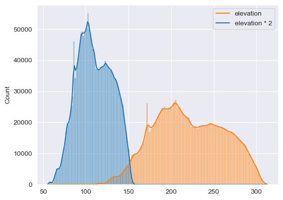

# import standard Python packages
import os
import sys
import subprocess
from pathlib import PathGet started with GRASS & Python in Jupyter Notebooks
Python
beginner
Python, a widely used general-purpose, high-level programming language provides a powerful scripting interface for geospatial data processing. Being easy-to-use yet powerful, it enables users to efficiently exploit the capabilities of the GRASS GIS software. Python scripts for GRASS GIS can be written at high level (GRASS GIS tools) as well as at low level (GRASS GIS libraries) through dedicated interfaces. Indeed, GRASS GIS is distributed with a set of python packages to provide functionalities at different levels.
In this tutorial, we will focus on two packages: grass.script and grass.jupyter, which provide Python interface to launch GRASS GIS tools in scripts and offer classes and setup functions for running GRASS GIS in Jupyter Notebooks, respectively. We will show two different use cases:
- A. You are mostly a Python user and only need to run a certain GRASS GIS tool on your spatial data to get a specific output
- B. You are mostly a GRASS GIS user that wants to use GRASS GIS from a Python environment or combine GRASS GIS with other Python packages.
Let’s first go through the main functions of GRASS GIS Python packages.
Python package grass.script
The grass.script package or GRASS GIS Python Scripting Library provides functions for calling GRASS GIS tools within Python scripts. The most commonly used functions include:
run_command: used when there is no text output or the text output does not need to be further processedread_command: used when the output of the tools is of text typeparse_command: used with tools that output machine readable text outputwrite_command: used with tools that expect text input, either in the form of a file or from stdin
There are several wrapper functions for frequently used tools, too. For example:
- To get info from a raster, script.raster.raster_info() is used:
gs.raster_info('dsm') - To get info of a vector, script.vector.vector_info() is used:
gs.vector_info('roads') - To list the raster in a project, script.core.list_grouped() is used:
gs.list_grouped(type=['raster']) - To obtain the computational region, script.core.region() is used:
gs.region() - To run raster algebra with r.mapcalc, script.raster.mapcalc() is used:
gs.mapcalc()
The grass.script package also comes with different functions that are useful when you are writing your own GRASS GIS tools or converting your scripts or workflows into GRASS GIS tools. Some examples of these functions are: append_uuid, use_temp_region, del_temp_region, parse_key_val, etc.
Note
Visit the grass.script documentation for more details and examples: https://grass.osgeo.org/grass-stable/manuals/libpython/script_intro.html
Python package grass.jupyter
The grass.jupyter library improves the integration of GRASS and Jupyter, and provides different classes to facilitate GRASS maps visualization:
Map: 2D renderingMap3D: 3D renderingInteractiveMap: interactive map visualization with folium or ipyleafletSeriesMap: visualizations of a series of raster or vector mapsTimeSeriesMap: visualization of space-time datasets
Note
Visit the grass.jupyter documentation for more details and examples: https://grass.osgeo.org/grass-stable/manuals/libpython/grass.jupyter.html
Let’s get started!
Setup
This tutorial can be run locally. You need to have GRASS GIS 8.4+ and Jupyter installed. For part A, please download these Sentinel 2 scenes and move the unzipped download into the directory where you are running this tutorial. For part B, we asume that you have downloaded the North Carolina sample dataset, i.e., there’s an existing GRASS project. Be sure you also have the following Python libraries installed in your environment: folium or ipyleaflet, numpy, seaborn, matplotlib, pandas.
The first thing we need to do is to import GRASS GIS python packages. In order to do so, we need to add GRASS GIS python package to PATH. Let’s see how we do that.
# check where GRASS GIS python packages are and add them to PATH
sys.path.append(
subprocess.check_output(["grass", "--config", "python_path"], text=True).strip()
)# import GRASS GIS python packages
import grass.script as gs
import grass.jupyter as gj
Note
We recommend Windows users to review how to run GRASS GIS in Jupyter Notebooks on Windows.
A. Use GRASS GIS tools within your Python spatial workflows
Now, let’s assume you have some raster data you want to process with GRASS GIS tools, eg. Sentinel 2 satellite data, to obtain texture indices. The first thing you’ll need to do is to create a GRASS GIS project to import your data. As we saw already in a previous fast track tutorial, GRASS projects are folders where we store spatial data with the same spatial reference. These projects can be placed wherever you want, including a temporary directory if you are mostly interested in the outputs only.
So, let’s create a project in a temporary directory to import, i.e. read, our data with GRASS GIS. The gs.create_project() function allows us to create a GRASS project passing different information. For example, we can use the EPSG code of the data CRS or directly pass a georeferenced file.
# Create a temporary folder where to place our GRASS project
import tempfile
tempdir = tempfile.TemporaryDirectory()# Create a project in the temporary directory
gs.create_project(path=tempdir.name,
name="nc_sentinel",
epsg="32617")Alternatively, use a georeferenced file to read the spatial reference information from:
# gs.create_project(path=tempdir.name, name="nc_sentinel", filename="path/to/georef/file", overwrite=True)Now that we created a project, let’s start a GRASS GIS session there.
# Start GRASS in the recently created project
session = gj.init(Path(tempdir.name, "nc_sentinel"))We are now ready to import data into the recently created project. Let’s use a for loop to import all 10 m resolution bands. These are level 2A surface reflectance data for blue, green, red and near infrared Sentinel 2 bands.
import shutil
shutil.unpack_archive("./nc_sentinel_utm17n/S2A_MSIL2A_20220304T160151_N0400_R097_T17SQV_20220304T215812.zip", "./nc_sentinel_utm17n")
files = sorted(Path('./nc_sentinel_utm17n/S2A_MSIL2A_20220304T160151_N0400_R097_T17SQV_20220304T215812.SAFE/GRANULE/L2A_T17SQV_A034986_20220304T160221/IMG_DATA/R10m').glob('*B*.jp2'))
filesfor file in files:
name = str(file)[-11:-4]
print("importing " + name)
gs.run_command("r.import", input=file, output=name)Let’s check the files we just imported are there:
gs.list_grouped(type="raster")["PERMANENT"]Let’s have a quick look at one of the imported bands. We can use the InteractiveMap class from the grass.jupyter package to visualize it.
m = gj.InteractiveMap()
m.add_raster("B08_10m")
m.show()Next step is to do some processing or analysis with the imported data. Since we’ll be creating new raster maps, we first need to set our computational region to the extent and resolution of one of our imported bands.
# Set computational region
gs.run_command("g.region", raster="B08_10m", flags="p")m = gj.InteractiveMap(tiles="OpenStreetMap")
m.add_raster("B08_10m")
m.show()It is common to estimate texture measures over panchromatic bands. Since we do not have one in Sentinel 2 data, we’ll create a synthetic one by averaging blue, green and red bands.
# Create synthetic pan band
gs.mapcalc("pan = (B02_10m + B03_10m + B04_10m) / 3")Now that we have the synthetic pan band, let’s estimate some texture measures with the r.texture tool.
gs.run_command("r.texture",
input="pan",
output="pan",
size=5,
method="contrast,corr")gs.list_grouped(type="raster", pattern="pan*")["PERMANENT"]t = gj.InteractiveMap(tiles="OpenStreetMap")
t.add_raster("pan_Contr")
t.add_raster("pan_Corr")
t.show()Finally, we can export our texture maps out of GRASS GIS and use them somewhere else or load them into a webGIS.
texture_maps = gs.list_grouped(type="raster", pattern="pan_*")["PERMANENT"]
texture_mapsfor texture in texture_maps:
gs.run_command("r.out.gdal", input=texture, output=f"{texture}.tif", format="GTiff")This use case follows the Extract-Transform-Load (ETL) process common in production systems. Indeed, this approach allows to include GRASS tools into such workflows. These type of tasks could be automatized in scripts to be run without even starting GRASS GIS using the --exec tool… but that’s material for a different tutorial :)
B. Use Python tools within GRASS GIS workflows
This case is more relevant for GRASS users who want to combine GRASS GIS with other Python tools for their data processing and analysis workflows.
Several GRASS users store most or all of their projects in a single folder, which has traditionally been called grassdata. When this is the case, to start GRASS GIS in an existing project, we also need to provide the path to such a folder.
# Start GRASS
session = gj.init("~/grassdata/nc_basic_spm_grass7/PERMANENT")
# alternatively
# session = gj.init("~/grassdata/nc_basic_spm_grass7")
# session = gj.init("~/grassdata", "nc_basic_spm_grass7", "PERMANENT")We are now within a GRASS project, let’s obtain information about it, like CRS details, region settings, list of raster and vector maps, etc.
# Print project's CRS
gs.parse_command("g.proj", flags="g")["srid"]# Print computational region
gs.region()# List raster maps
gs.list_grouped(["raster"])Let’s obtain metadata about the elevation raster map.
# Raster info
gs.raster_info("elevation")If we would only need to know or use the minimum value of the elevation raster, we can get it as follows:
gs.raster_info("elevation")["min"]Let’s now visualize raster and vector maps with a different grass.jupyter class, the non-interactive Map class. This class creates and displays GRASS maps as PNG files. We basically instantiate the class first, add maps and maps’ elements and finally show the result. There are 2 ways of calling display (d.*) modules:
- replace
.by_as inm.d_rast() - use
run()as inm.run("d.rast")
# Instantiate the Map class
m = gj.Map(width=400)The Map class will by default use the first raster or vector extent to set the display extent. You could however also use the current computational region with use_region=True or call a previously saved computational region (different than the current) with the argument saved_region.
# Add maps and map elements
m.d_rast(map="elevation")
m.d_vect(map="streams")
m.d_legend(raster="elevation", at=(50, 95, 85, 90), flags="b")# Display the result
m.show()We can save our displayed maps by calling the save() method, i.e., m.save(). For the Map class it will output a PNG file, while for the InteractiveMap class an HTML.
GRASS GIS & NumPy
Let’s now see how to convert our GRASS rasters into numpy arrays. Having our raster maps as numpy arrays opens up a world of possibilities in terms of visualization and data analysis and modeling. We won’t go into anything complex here, but we’ll show how to read rasters into numpy arrays, plot them, modify them and then write them back into GRASS.
# Import required libraries
import numpy as np
import seaborn as sns
import matplotlib.pyplot as plt
from grass.script import array as garray# Read elevation as numpy array
elev = garray.array(mapname="elevation", null="nan")
print(elev.shape)# Estimate array average
print(np.average(elev))# Plot elev histogram
sns.set_style('darkgrid')
sns.histplot(data=elev.ravel(), labkde=True)Let’s modify our array and write it back into GRASS GIS. For this, we create a new copy of the GRASS elevation map first as shown below.
elev_2 = garray.array(mapname="elevation")
elev_2 *= 2# Plot elev*2
sns.histplot(data=[elev.ravel(), elev_2.ravel()], kde=True)
plt.legend(labels=["elevation * 2", "elevation"])
Now we write the modified array into a GRASS raster map and check it’s actually there.
elev_2.write(mapname="elevation_2", overwrite=True)gs.list_grouped(type="raster", pattern="elev*")GRASS GIS & Pandas
Let’s now explore how to convert text outputs into pandas data frames. We will get elevation univariate statistics for each land use class and parse the output into a pandas data frame.
import pandas as pd
from io import StringIOstats = gs.read_command("r.univar",
flags="t",
map="elevation",
zones="landuse",
separator="comma")
df = pd.read_csv(StringIO(stats))
dfNext, we plot the mean elevation per class as follows:
plt.figure(figsize=(10, 5))
plt.bar(df['label'], df['mean'])
plt.ylabel('Elevation')
plt.title('Mean elevation by land cover type')
plt.xticks(rotation=90)
plt.show()Similarly, if we need to do analysis with the attributes of GRASS vector maps, it is also possible to read the attribute table as a pandas data frame. Let’s see an example with the census vector map:
census = gs.parse_command("v.db.select", map="census", format="json")["records"]
df = pd.DataFrame(census)
dfOnce the attribute table is a data frame, we can, e.g., filter data by a condition and plot the results.
fam_size_3 = df[df["FAM_SIZE"] > 3.0]fam_size_3.plot.scatter(x="FAM_SIZE", y="OWNER_U")Final remarks
In this tutorial, we have demonstrated, with very simple examples, how to use GRASS GIS tools together with Python, putting a special focus on data import and export as well as format conversions. Expert GRASS or Python users can then implement their workflows combining tools accordingly.
Enjoy!
The development of this tutorial was funded by the US National Science Foundation (NSF), award 2303651.